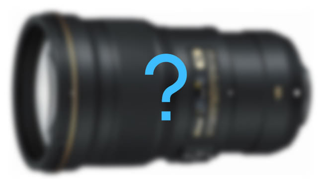

Nikon just announced that it is developing a 500mm f/5.6 lens with a Phase Fresnel element, which would make it only the second lens in Nikon’s lineup to have such a specialized component, the other being the 300mm f/4 PF. This indicates that Nikon is prioritizing low weight for the 500mm f/5.6, given that a PF element can replace multiple standard lens elements with one that is much smaller and thinner. No price, shipping date, or photos of the new lens have been released. The full name is the AF-S NIKKOR 500mm f/5.6E PF ED VR.

Although not much information has been released about the new lens yet, we do have a few hints at what the telephoto will be like, based on sources such as Nikon’s patent for a 500mm f/5.6 PF lens. The patent depicts it as 28 cm long (11 inches) with 19 lens elements. By comparison, the current 300mm f/4 PF lens is 14.8 cm long (5.8 inches) and has 16 elements. The 300mm f/4 PF sells for $2000, so you can expect that the new 500mm f/5.6 will not be a cheap lens.
However, you can expect that it will be lightweight, at least for such a long telephoto. The 300mm f/4 PF still impresses photographers with its comparatively low weight, totaling only 755 grams (1.67 pounds). The older 300mm f/4, which does not have a Phase Fresnel element, weighs 1.44 kilos grams (3.17 pounds), almost twice the weight.
There are also parallels between the new 500mm f/5.6 and Nikon’s most recent iteration of the 500mm f/4, which itself experienced a major weight reduction compared to its prior versions. However, the 500mm f/4 E still weighs a hefty 3.09 kilos (6.81 pounds). It also costs $10,300. (Though, as our review shows, the 500mm f/4 E is an exceptional lens.) Will photographers be willing to forego one aperture stop in exchange for, presumably, far less weight and a far lower price? It remains to be seen, but I certainly suspect that many will.
Another Nikon lens worth comparing is the 200-500mm f/5.6. This lens also weighs a decent amount at 2.3 kilos (5.07 pounds) and, of course, zooms. As you can see in our review of the 200-500mm, it also decreases in performance noticeably at 500mm. For those reasons, the two lenses are likely to have somewhat different audiences. Assuming the new 500mm f/5.6 PF lens is sharp and comparatively lightweight, I can see people willing to pay significantly more than they do for the 200mm-500mm (which sells for just $1400).